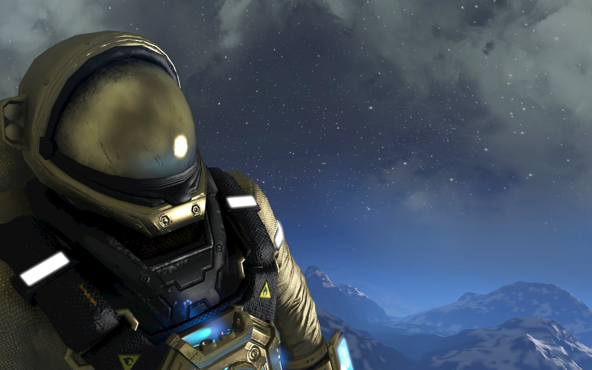

Half-Life
Half-Life é uma série de jogos de tiro em primeira pessoa que dividem uma história alternativa de ficção científica. Todos os jogos na série utilizam ou o motor de jogo GoldSrc ou Source e são lineares, narrativos e de um jogador

Equilinox
Equilinox é um relaxante jogo de simulação da natureza, no qual você pode criar e nutrir seus próprios ecossistemas. Modele o mundo ao seu gosto, cultive e crie centenas de espécies diferentes e evolua sua vida selvagem para desbloquear mais plantas e animais exóticos.
Space Engineers
Space Engineers é um jogo de sandbox baseado em voxel no espaço e em planetas. Foi desenvolvido e publicado pelo desenvolvedor independente da República Tcheca, Keen Software House. Em 2013, o lançamento inicial do jogo se juntou ao programa de acesso antecipado do Steam.